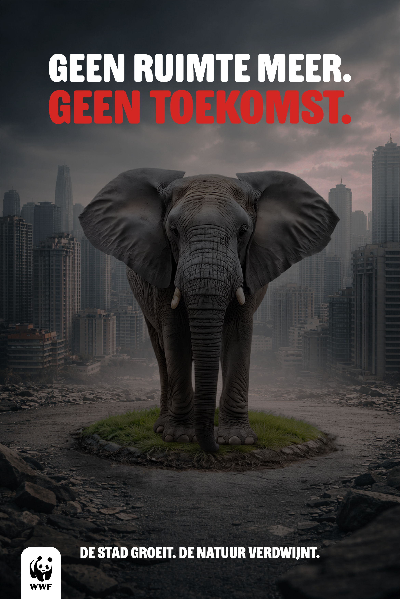
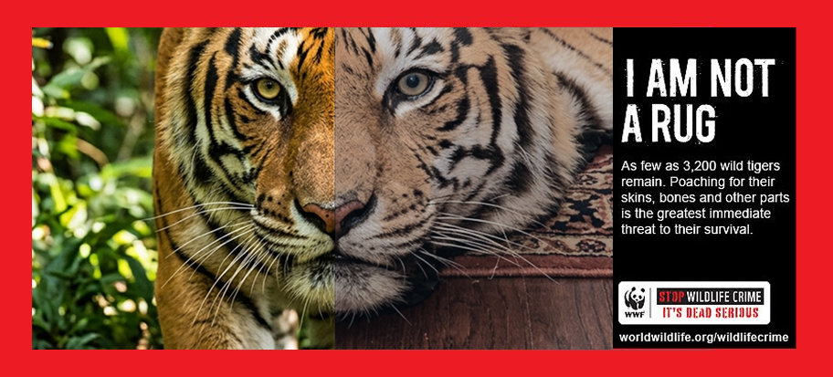

Twee opdrachten waarin ik visuele communicatie analyseerde en zelf ontwierp aan de hand van semiotiek, retorica en de gestaltwetten: een overtuigender variant op een bestaande WWF-tijgercampagne, en een eigen bewustwordingsposter voor het Wereld Natuur Fonds.

Bij het vak Beeldtaal onderzochten we hoe visuele communicatie betekenis en overtuigingskracht opbouwt. De theorie kwam uit drie hoeken: semiotiek (tekens en betekenis), retorica (ethos, pathos, logos, kairos en stijlfiguren) en de gestaltwetten (hoe het oog en brein een beeld organiseren).
Deze theorie werd toegepast in twee opdrachten: eerst het analyseren en overtuigender maken van een bestaande bewustwordingscampagne, en daarna het zelf ontwerpen van een volledig nieuwe poster vanuit dezelfde theoretische basis.
Zoek een bestaande visual van een bewustwordingscampagne, maak een retorische analyse, benoem de gebruikte gestaltwetten en de indexicale tekens. Maak vervolgens een eigen, overtuigender variant op de visual en onderbouw de gemaakte keuzes.
Ik koos een bestaande WWF-campagne over de tijger als uitgangspunt. Het origineel waarschuwt voor het uitsterven van de tijger door stroperij: "I am not a rug." Met als feit dat er nog maar 3.200 wilde tijgers over zijn, en stroperij voor huiden, botten en andere onderdelen de grootste directe dreiging vormt voor hun overleving.
Op basis van de retorische analyse, de gestaltwetten en de indexicale tekens uit het origineel heb ik een eigen, overtuigender versie gemaakt. Het contrast tussen het levende dier in de natuur en de tekst "I am not a rug" versterkt de boodschap: de tijger is geen object of decoratie, maar een levend wezen dat met uitsterven wordt bedreigd.

Maak een ethisch verantwoorde poster voor een bewustwordings- of reclamecampagne voor een specifieke doelgroep. Pas elementen uit semiotiek, retorica en gestalt toe en onderbouw met welk doel je de verschillende elementen hebt gebruikt.
Als inspiratiebron bezochten we het Wereldmuseum in Amsterdam en de tentoonstelling "Things That Matter", waarna we zelf een onderwerp kozen om bewustwording rond te creëren.
Ik koos verstedelijking en het verdwijnen van natuurlijke leefgebieden als onderwerp, met de olifant als symbool voor de dieren die hierdoor steeds minder ruimte overhouden. De poster richt zich op een breed publiek, met een focus op beleidsmakers en mensen die verstedelijking en milieu een warm hart toedragen.
"Geen ruimte meer. Geen toekomst."
De poster toont een olifant die eenzaam op een klein eilandje van gras staat, omringd door een verwoeste, verstedelijkte omgeving. Het beeld symboliseert hoe leefgebieden steeds verder krimpen door menselijke uitbreiding, en hoe afhankelijk de natuur is geworden van een eindige, kwetsbare ruimte.
Het belangrijkste indexicale teken in de poster is de olifant die eenzaam op het kale stukje gras staat. Dit verwijst naar:
Het grasveld is klein en geïsoleerd, wat de kwetsbare situatie van de natuur symboliseert. Daarnaast functioneert ook de verwoeste, stedelijke achtergrond als index voor de groeiende verstedelijking en het verlies van natuurlijk leefgebied.
Schema's — Repetitio: "Geen ... Geen ..." versterkt de impact. Climax: opbouw van een algemene boodschap naar een concrete claim. Verba-pictura: tekst en beeld werken samen om dezelfde boodschap te versterken.
De compositie is symmetrisch opgebouwd met de olifant in het midden als focuspunt. De grauwe, koude kleuren en sfeer van de stad versterken het verlatingsgevoel, en contrasteren met de levendige groene plek onder de olifant.
Na feedback van medestudenten en de coach zijn er twee concrete verbeteringen doorgevoerd: een spelfout is weggewerkt en het kleurcontrast van de tekst is verbeterd voor betere leesbaarheid tegen de donkere achtergrond.
Olifant: stockfoto via Adobe Stock. Achtergrond stad en grasveld: gegenereerd met ChatGPT, op basis van prompts gericht op een apocalyptisch, verstedelijkt straatbeeld en een geïsoleerd stukje gras met zichtbare grond en wortels. WWF-logo: officieel merkmateriaal.
In deze opdrachten heb ik geleerd hoe beeldtaal gebruikt kan worden om een sterke boodschap over te brengen zonder veel tekst. Door gebruik te maken van symbolische elementen en sterke visuele contrasten kon ik de boodschap krachtig overbrengen, zonder dat een uitgebreide toelichting nodig is.
De poster maakt bewust gebruik van semiotiek, retorica en gestaltprincipes om een krachtige en urgente boodschap over te brengen aan een breed publiek.